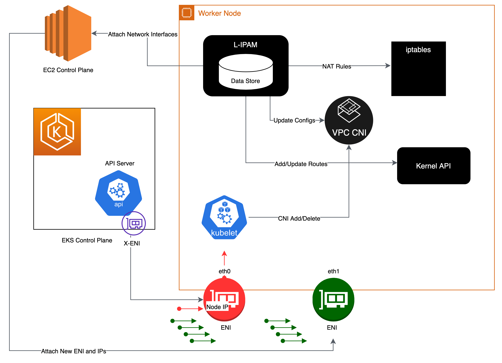

Amazon VPC CNI¶
Amazon EKS는 Amazon VPC 컨테이너 네트워크 인터페이스(VPC CNI) 플러그인을 통해 클러스터 네트워킹을 구현합니다. CNI 플러그인을 사용하면 쿠버네티스 파드가 VPC 네트워크에서와 동일한 IP 주소를 가질 수 있습니다. 구체적으로는 파드 내부의 모든 컨테이너는 네트워크 네임스페이스를 공유하며 로컬 포트를 사용하여 서로 통신할 수 있습니다.
Amazon VPC CNI에는 두 가지 구성 요소가 있습니다.
- CNI 바이너리는 파드 간 통신을 활성화하는 파드 네트워크를 구성합니다. CNI 바이너리는 노드의 루트 파일 시스템에서 실행되며, 새 파드가 노드에 추가되거나 기존 파드가 노드에서 제거될 때 kubelet에 의해 호출됩니다.
- 오래 실행되는(long-running) 노드 로컬(node-local) IP 주소 관리 (IPAM) 데몬인 ipamd는 다음을 담당합니다.
- 노드의 ENI 관리 및
- 사용 가능한 IP 주소 또는 Prefix의 웜 풀 유지
인스턴스가 생성되면 EC2는 기본 서브넷과 연결된 기본 ENI를 생성하여 연결합니다. 기본 서브넷은 퍼블릭 또는 프라이빗일 수 있습니다. 호스트 네트워크 모드에서 실행되는 파드는 노드 기본 ENI에 할당된 기본 IP 주소를 사용하며 호스트와 동일한 네트워크 네임스페이스를 공유합니다.
CNI 플러그인은 노드의 Elastic Network Interface (ENI)를 관리합니다. 노드가 프로비저닝되면 CNI 플러그인은 노드의 서브넷에서 기본 ENI에 슬롯 풀(IP 또는 Prefix)을 자동으로 할당합니다. 이 풀을 웜 풀이라고 하며, 크기는 노드의 인스턴스 유형에 따라 결정됩니다. CNI 설정에 따라 슬롯은 IP 주소 또는 Prefix일 수 있습니다. ENI의 슬롯이 할당되면 CNI는 웜 슬롯 풀이 있는 추가 ENI를 노드에 연결할 수 있습니다. 이러한 추가 ENI를 보조 ENI라고 합니다. 각 ENI는 인스턴스 유형에 따라 특정 갯수의 슬롯만 지원할 수 있습니다. CNI는 필요한 슬롯 수를 기반으로 인스턴스에 더 많은 ENI를 연결합니다. 여기서 슬롯 갯수는 보통 파드 갯수에 해당합니다. 이 프로세스는 노드가 추가 ENI를 더 이상 제공할 수 없을 때까지 계속됩니다. 또한 CNI는 파드 시작 속도를 높이기 위해 '웜' ENI와 슬롯을 사전 할당합니다. 참고로, 각 인스턴스 유형에는 연결할 수 있는 최대 ENI 수가 존재합니다. 이 조건은 컴퓨팅 리소스와 더불어 파드 밀도(노드당 파드 수)에 대한 또 하나의 제약 조건입니다.

최대 네트워크 인터페이스 수, 사용할 수 있는 최대 슬롯 수는 EC2 인스턴스 유형에 따라 다릅니다. 각 파드는 슬롯의 IP 주소를 사용하기 때문에 특정 EC2 인스턴스에서 실행할 수 있는 파드의 수는 연결할 수 있는 ENI의 수와 각 ENI가 지원하는 슬롯의 수에 따라 달라집니다. 인스턴스의 CPU 및 메모리 리소스가 고갈되지 않도록 EKS 사용 가이드에 따라 최대 파드를 설정할 것을 권장합니다. hostNetwork를 사용하는 파드는 이 계산에서 제외됩니다. 주어진 인스턴스 유형에 대한 EKS의 권장 최대 파드 개수를 계산하기 위해 max-pod-calculator.sh라는 스크립트를 사용할 수 있습니다.
개요¶
보조 IP 모드는 VPC CNI의 기본 모드입니다. 이 가이드에서는 보조 IP 모드가 활성화된 경우의 VPC CNI 동작에 대한 일반적인 개요를 제공합니다. ipamd의 기능(IP 주소 할당)은 VPC CNI의 구성 설정, 예를 들어 Prefix 모드, 파드당 보안 그룹 수, 사용자 지정 네트워킹에 따라 달라질 수 있습니다.
Amazon VPC CNI는 워커 노드에 aws-node라는 이름의 쿠버네티스 데몬셋으로 배포됩니다. 워커 노드가 프로비저닝되면 primary ENI라고 하는 기본 ENI가 연결됩니다. CNI는 노드의 기본 ENI에 연결된 서브넷에서 웜 풀의 ENI와 보조 IP 주소를 할당합니다. 기본적으로 ipamd는 노드에 추가 ENI를 할당하려고 시도합니다. 단일 파드가 스케줄되고 기본 ENI의 보조 IP 주소가 할당되면 IPAMD는 추가 ENI를 할당합니다. 이 “웜” ENI는 더 빠른 파드 네트워킹을 가능하게 합니다. 보조 IP 주소 풀이 부족해지면 CNI는 다른 ENI를 추가하여 더 많은 주소를 할당합니다.
풀의 ENI 및 IP 주소 수는 WARM_ENI_TARGET, WARM_IP_TARGET, MINIMUM_IP_TARGET이라는 환경 변수를 통해 구성됩니다. aws-node 데몬셋은 충분한 수의 ENI가 연결되어 있는지 주기적으로 확인합니다. WARM_ENI_TARGET 혹은 WARM_IP_TARGET 및 MINIMUM_IP_TARGET 조건이 충족되면 충분한 수의 ENI가 연결됩니다. 연결된 ENI가 충분하지 않은 경우 CNI는 MAX_ENI 한도에 도달할 때까지 EC2에 API를 호출하여 추가로 ENI를 연결합니다.
WARM_ENI_TARGET- 정수 값, 값이 >0이면 요구 사항이 활성화된 것입니다.- 관리할 웜 ENI의 수입니다. ENI는 노드에 보조 ENI로 연결되면 “웜” 상태가 되지만, 어떤 파드에서도 사용되지 않습니다. 구체적으로 말하면 ENI의 IP 주소가 파드와 연결되지 않은 상태입니다.
- 예: ENI가 2개이고 각 ENI가 5개의 IP 주소를 지원하는 인스턴스를 예로 들어 보겠습니다. WARM_ENI_TARGET은 1로 설정되어 있습니다. 인스턴스에 정확히 5개의 IP 주소가 연결된 경우 CNI는 인스턴스에 2개의 ENI를 연결한 상태로 유지합니다. 첫 번째 ENI가 사용 중이며 이 ENI에서 사용 가능한 5개 IP 주소가 모두 사용됩니다. 두 번째 ENI는 풀에 5개 IP 주소가 모두 있는 “웜” 상태입니다. 인스턴스에서 다른 파드를 시작하는 경우 6번째 IP 주소가 필요합니다. CNI는 이 6번째 파드에 두 번째 ENI 및 풀의 5개의 IP에서 IP 주소를 할당합니다. 이제 두 번째 ENI가 사용되며 더 이상 “웜” 상태가 아니게 됩니다. CNI는 최소 1개의 웜 ENI를 유지하기 위해 세 번째 ENI를 할당합니다.
Note
웜 ENI도 VPC의 CIDR에 있는 IP 주소를 사용합니다. IP 주소는 파드와 같은 워크로드에 연결되기 전까지는 “미사용” 또는 “웜” 상태가 됩니다.
WARM_IP_TARGET, 정수, 값이 >0이면 요구 사항이 활성화된 것입니다.- 유지할 웜 IP 주소 수입니다. 웜 IP는 활성 연결된 ENI에서 사용할 수 있지만 파드에 할당되지는 않습니다. 즉, 사용 가능한 웜 IP의 수는 추가 ENI 없이 파드에 할당할 수 있는 IP의 수입니다.
- 예: ENI가 1개이고 각 ENI가 20개의 IP 주소를 지원하는 인스턴스를 예로 들어 보겠습니다. WARM_IP_TARGET은 5로 설정되어 있습니다. WARM_ENI_TARGET은 0으로 설정되어 있습니다. 16번째 IP 주소가 필요할 때까지는 ENI 1개만 연결됩니다. 그 다음에는 CNI가 서브넷 CIDR의 가능한 주소 20개를 사용하여 두 번째 ENI를 연결합니다.
MINIMUM_IP_TARGET, 정수, 값이 >0이면 요구 사항이 활성화된 것입니다.- 언제든지 할당할 수 있는 최소 IP 주소 수입니다. 이는 일반적으로 인스턴스 시작 시 여러 ENI 할당을 미리 불러오는 데 사용됩니다.
- 예: 새로 시작한 인스턴스를 예로 들어보겠습니다. ENI는 1개이고 각 ENI는 10개의 IP 주소를 지원합니다. MINIMUM_IP_TARGET은 100으로 설정되어 있습니다. ENI는 총 100개의 주소에 대해 9개의 ENI를 즉시 추가로 연결합니다. 이는
WARM_IP_TARGET또는WARM_ENI_TARGET값과 상관없이 발생합니다.
이 프로젝트에는 서브넷 계산기 Excel 문서가 포함되어 있습니다. 이 문서는 WARM_IP_TARGET 및 WARM_ENI_TARGET과 같은 다양한 ENI 구성 옵션에 따라 지정된 워크로드의 IP 주소 사용을 시뮬레이션합니다.

Kubelet이 파드 추가 요청을 받으면, CNI 바이너리는 ipamd에 사용 가능한 IP 주소를 쿼리하고, ipamd는 이를 파드에 제공합니다. CNI 바이너리는 호스트와 파드 네트워크를 연결합니다.
노드에 배포된 파드는 기본적으로 기본 ENI와 동일한 보안 그룹에 할당되며, 파드를 다른 보안 그룹으로 구성할 수도 있습니다.

IP 주소 풀이 고갈되면 플러그인은 자동으로 다른 Elastic Network Interface를 인스턴스에 연결하고 해당 인터페이스에 다른 보조 IP 주소 세트를 할당합니다. 이 프로세스는 노드가 더 이상 추가 Elastic Network Interface를 지원할 수 없을 때까지 계속됩니다.

파드가 삭제되면 VPC CNI는 파드의 IP 주소를 30초 쿨다운 캐시에 저장합니다. 쿨 다운 캐시의 IP는 신규 파드에 할당되지 않습니다. 쿨링오프 주기가 끝나면 VPC CNI는 파드 IP를 웜 풀로 다시 옮깁니다. 쿨링 오프 주기는 파드 IP 주소가 너무 이르게 재활용되는 것을 방지하고 모든 클러스터 노드의 kube-proxy가 iptables 규칙 업데이트를 완료할 수 있도록 합니다. IP 또는 ENI의 수가 웜 풀 설정 수를 초과하면 ipamd 플러그인은 VPC에 IP와 ENI를 반환합니다.
보조 IP 모드에서 앞서 설명한 바와 같이, 각 파드는 인스턴스에 연결된 ENI 중 하나로부터 하나의 보조 프라이빗 IP 주소를 수신합니다. 각 파드는 IP 주소를 사용하기 때문에 특정 EC2 인스턴스에서 실행할 수 있는 파드의 수는 연결할 수 있는 ENI의 수와 지원하는 IP 주소의 수에 따라 달라집니다. VPC CNI는 limit파일을 확인하여 각 인스턴스 유형에 허용되는 ENI와 IP 주소 수를 알아냅니다.
다음 공식을 사용하여 노드에 배포할 수 있는 최대 파드 수를 확인할 수 있습니다.
(인스턴스 유형의 네트워크 인터페이스 수 × (네트워크 인터페이스당 IP 주소 수 - 1)) + 2
+2는 kube-proxy 및 VPC CNI와 같은 호스트 네트워킹에서 필요한 파드를 나타냅니다. Amazon EKS에서는 각 노드에서 kube-proxy 및 VPC CNI가 작동해야 하며, 이러한 요구 사항은 max-pods 값에 반영됩니다. 추가 호스트 네트워킹 파드를 실행하려면 max-pods 값 업데이트를 고려해 보십시오.
+2는 kube-proxy 및 VPC CNI와 같은 호스트 네트워킹을 사용하는 쿠버네티스 파드를 나타냅니다. Amazon EKS는 모든 노드에서 kube-proxy와 VPC CNI를 실행해야 하며, 이는 max-pods 기준으로 계산됩니다. 더 많은 호스트 네트워킹 파드를 실행할 계획이라면 max-pods 값을 업데이트하는 것을 고려해 보십시오. 시작 템플릿에서 --kubelet-extra-args "—max-pods=110"을 사용자 데이터로 지정할 수 있습니다.
예를 들어, c5.large 노드 3개(ENI 3개, ENI당 최대 10개 IP)가 있는 클러스터에서 클러스터가 시작되고, CoreDNS 파드 2개가 있는 경우 CNI는 49개의 IP 주소를 사용하여 웜 풀에 보관합니다. 웜 풀을 사용하면 애플리케이션 배포 시 파드를 더 빠르게 시작할 수 있습니다.
노드 1 (CoreDNS 파드 포함): ENI 2개, IP 20개 할당
노드 2 (CoreDNS 파드 포함): ENI 2개, IP 20개 할당
노드 3 (파드 없음): ENI 1개, IP 10개 할당
주로 데몬셋으로 실행되는 인프라 파드는 각각 최대 파드 수에 영향을 미친다는 점을 고려합니다. 여기에는 다음이 포함될 수 있습니다.
- CoreDNS
- Amazon Elastic LoadBalancer
- metrics-server 운영용 Pods
이러한 파드들의 용량을 조합하여 인프라를 계획하는 것을 권장합니다. 각 인스턴스 유형에서 지원하는 최대 파드 수 목록은 GitHub의 eni-max-Pods.txt를 참조합니다.

권장 사항¶
VPC CNI 관리형 애드온 배포¶
클러스터를 프로비저닝하면 Amazon EKS가 자동으로 VPC CNI를 설치합니다. 그럼에도 불구하고 Amazon EKS는 클러스터가 컴퓨팅, 스토리지, 네트워킹과 같은 기본 AWS 리소스와 상호 작용할 수 있도록 하는 관리형 애드온을 지원합니다. VPC CNI를 비롯한 관리형 애드온을 사용하여 클러스터를 배포하는 것이 좋습니다.
Amazon EKS 관리형 애드온은 Amazon EKS 클러스터를 위한 VPC CNI 설치 및 관리를 제공합니다. Amazon EKS 애드온에는 최신 보안 패치, 버그 수정이 포함되어 있으며, Amazon EKS와 호환되는지 AWS의 검증을 거쳤습니다. VPC CNI 애드온을 사용하면 Amazon EKS 클러스터의 보안 및 안정성을 지속적으로 보장하고 추가 기능을 설치, 구성 및 업데이트하는 데 필요한 노력을 줄일 수 있습니다. 또한 관리형 애드온은 Amazon EKS API, AWS 관리 콘솔, AWS CLI 및 eksctl을 통해 추가, 업데이트 또는 삭제할 수 있습니다.
kubectl get 명령어와 함께 --show-managed-fields 플래그를 사용하여 VPC CNI의 관리형 필드를 찾을 수 있습니다.
관리형 애드온은 15분마다 구성을 자동으로 덮어쓰는 것으로 구성 변동을 방지합니다. 즉, 애드온 생성 후 Kubernetes API를 통해 변경한 관리형 애드온은 자동화된 드리프트 방지 프로세스에 의해 덮어쓰여지고 애드온 업데이트 프로세스 중에도 기본값으로 설정됩니다.
EKS에서 관리하는 필드는 managedFields 하위에 나열되며 이 필드에 대한 관리자는 EKS입니다. EKS에서 관리하는 필드에는 서비스 어카운트, 이미지, 이미지 URL, liveness probe, readiness probe, 레이블, 볼륨 및 볼륨 마운트가 포함됩니다.
Info
WARM_ENI_TARGET, WARM_IP_TARGET, MINIMUM_IP_TARGET과 같이 자주 사용되는 필드는 관리되지 않으며 조정되지 않습니다. 이러한 필드의 변경 사항은 애드온 업데이트 시에도 유지됩니다.
프로덕션 클러스터를 업데이트하기 전, 특정 구성의 비프로덕션 클러스터에서 애드온 동작을 테스트하는 것이 좋습니다. 또한 애드온 구성에 대해서는 EKS 사용자 가이드의 단계를 따라합니다.
관리형 애드온으로 마이그레이션¶
자체 관리형 VPC CNI의 버전 호환성을 관리하고 보안 패치를 업데이트합니다. 자체 관리형 애드온을 업데이트하려면 EKS 사용자 가이드에 설명된 쿠버네티스 API와 안내 사항들을 활용해야 합니다. 기존 EKS 클러스터의 경우, 관리형 애드온으로 마이그레이션하는 것이 좋으며, 마이그레이션 전에 현재 CNI 설정을 백업해 둘 것을 권장합니다. 관리형 애드온을 구성하기 위해 Amazon EKS API, AWS 관리 콘솔 또는 AWS 명령줄 인터페이스를 활용할 수 있습니다.
필드 기본 설정에 관리형으로 표시된 경우 Amazon EKS는 CNI 구성 설정을 대체합니다. 관리형 필드를 수정하지 않도록 주의합니다. 애드온은 웜 환경 변수 및 CNI 모드와 같은 구성 필드를 조정하지 않습니다. 파드와 애플리케이션은 관리형 CNI로 마이그레이션하는 동안 계속 실행됩니다.
업데이트 전 CNI 설정 백업¶
VPC CNI는 고객의 데이터 플레인(노드)에서 실행되므로 Amazon EKS는 신규 버전이 출시되거나 클러스터를 업데이트한 후에 신규 쿠버네티스 마이너 버전으로 (관리형 및 자체 관리형)애드온을 자동으로 업데이트하지 않습니다. 기존 클러스터의 애드온을 업데이트하려면 update-addon API를 사용하거나 EKS 콘솔에서 애드온용 지금 업데이트(Update Now) 링크를 클릭하여 업데이트를 트리거해야 합니다. 자체 관리형 애드온을 배포한 경우 자체 관리형 VPC CNI 애드온 업데이트에 안내된 단계를 따르도록 합니다.
마이너 버전은 한 번에 하나씩 업데이트하는 것이 좋습니다. 예를 들어 현재 마이너 버전이 1.9이고 1.11로 업데이트할 경우, 먼저 1.10의 최신 패치 버전으로 업데이트한 다음 1.11의 최신 패치 버전으로 업데이트해야 합니다.
Amazon VPC CNI를 업데이트하기 전에 AWS 노드 데몬셋 검사를 수행합니다. 기존 설정을 백업합니다. 관리형 애드온을 사용하는 경우 Amazon EKS에서 재정의할 수 있는 설정을 업데이트하지 않았는지 확인합니다. 고객의 자동화 워크플로의 업데이트 훅을 적용하거나 혹은 애드온 업데이트 후 수동 적용 단계를 추가할 것을 권장합니다.
자체 관리형 애드온의 경우 백업을 GitHub의 releases 내용과 비교하여 사용 가능한 버전을 확인하고 업데이트하려는 버전의 변경 사항을 숙지합니다. 자체 관리형 애드온을 관리하기 위해 헬름(Helm)을 사용하는 것을 권장하며, values 파일을 활용하여 설정을 적용하는 것을 권장합니다. 데몬셋 삭제와 관련된 모든 업데이트 작업은 애플리케이션 다운타임으로 이어지므로 피해야 합니다.
보안 컨텍스트 이해¶
VPC CNI를 효율적으로 관리하기 위해 구성된 보안 컨텍스트를 이해하는 것이 좋습니다. Amazon VPC CNI에는 CNI 바이너리와 ipamd(aws-node) 데몬셋이라는 두 가지 구성 요소가 있습니다. CNI는 노드에서 바이너리로 실행되며 노드 루트 파일 시스템에 액세스할 수 있으며, 노드 수준에서 iptables를 처리하므로 privileged 접근에 대한 권한도 갖습니다. CNI 바이너리는 파드가 추가되거나 제거될 때 kubelet에 의해 호출됩니다.
aws-node 데몬셋은 노드 수준에서 IP 주소 관리를 담당하는 장기 실행 프로세스입니다. aws-node는 hostNetwork 모드에서 실행되며 루프백 디바이스 및 동일한 노드에 있는 다른 파드의 네트워크 활동에 대한 액세스를 허용합니다. aws-node의 초기화 컨테이너는 privileged 모드에서 실행되며 CRI 소켓을 마운트하여 데몬셋이 노드에서 실행되는 파드의 IP 사용을 모니터링할 수 있도록 합니다. Amazon EKS는 aws-node의 초기화 컨테이너의 privileged 요구 조건을 제거하기 위해 노력하고 있습니다. 또한 aws-node는 NAT 엔트리를 업데이트하고 iptables 모듈을 로드해야 하므로 NET_ADMIN 권한으로 실행해야 합니다.
Amazon EKS는 파드 및 네트워킹 설정의 IP 관리를 위해 aws-node 매니페스트에서 정의한 대로 보안 정책을 배포할 것을 권장합니다. 최신 버전의 VPC CNI로 업데이트하는 것을 고려합니다. 또한 특정 보안 요구 사항이 있는 경우 GitHub 이슈를 확인합니다.
CNI에 별도의 IAM 역할 사용¶
AWS VPC CNI에는 AWS 자격 증명 및 액세스 관리(IAM) 권한이 필요합니다. IAM 역할을 사용하려면 먼저 CNI 정책을 설정해야 합니다. IPv4 클러스터용 AWS 관리형 정책인 AmazonEKS_CNI_Policy를 사용할 수 있습니다. Amazon EKS의 CNI 관리형 정책에는 IPv4 클러스터에 대한 권한만 존재합니다. 이 링크에 표시된 권한을 사용하여 IPv6 클러스터에 대해 별도의 IAM 정책을 생성해야 합니다.
기본적으로 VPC CNI는 (관리형 노드 그룹과 자체 관리형 노드 그룹 모두)Amazon EKS 노드 IAM 역할을 상속합니다.
Amazon VPC CNI에 대한 관련 정책을 사용하여 별도의 IAM 역할을 구성하는 것을 강력하게 권장합니다. 그렇지 않은 경우 Amazon VPC CNI의 파드는 노드 IAM 역할에 할당된 권한을 얻고 노드에 할당된 인스턴스 프로필에 접근할 수 있습니다.
VPC CNI 플러그인은 aws-node라는 서비스 어카운트를 생성하고 구성합니다. 기본적으로 서비스 어카운트는 Amazon EKS CNI 정책이 연결된 Amazon EKS 노드의 IAM 역할에 바인딩됩니다. 별도의 IAM 역할을 사용하려면 Amazon EKS CNI 정책이 연결된 신규 서비스 어카운트를 생성하는 것이 좋습니다. 신규 서비스 어카운트를 사용하려면 CNI 파드 재배포를 진행해야 합니다. 신규 클러스터를 생성할 때 VPC CNI 관리형 애드온에 --service-account-role-arn을 지정하는 것을 고려합니다. 이 때 Amazon EKS 노드의 IAM 역할에서 IPv4와 IPv6 모두에 대한 Amazon EKS CNI 정책을 반드시 제거해야 합니다.
보안 침해의 피해 범위를 최소화하기 위해 인스턴스 메타데이터 접근을 차단하는 것을 권장합니다.
Liveness/Readiness Probe 실패 처리¶
프로브 실패로 인해 애플리케이션의 파드가 컨테이너 생성 상태에서 멈추는 것을 방지하기 위해 EKS 1.20 버전 이상 클러스터의 liveness 및 readiness probe의 타임아웃 값 (기본값 TimeoutSeconds: 10)을 높일 것을 권장합니다. 해당 이슈는 데이터 집약적인 배치 처리 클러스터에서 발견되었습니다. CPU를 많이 사용하면 aws-node 프로브 상태 장애가 발생하여 Pod CPU 리소스 요청이 충족되지 않을 수 있습니다. 프로브 타임아웃을 수정하는 것 외에도 aws-node에 대한 CPU 리소스 요청(기본값 CPU: 25m)이 올바르게 구성되었는지 확인합니다. 노드에 문제가 있는 경우가 아니면 설정을 업데이트하지 않는 것을 권장합니다.
Amazon EKS 지원을 받는 동안 노드에서 sudo bash /opt/cni/bin/aws-cni-support.sh를 실행할 것을 권장합니다. 이 스크립트는 노드의 kubelet 로그와 메모리 사용률을 평가하는 데 도움이 됩니다. 스크립트를 실행하기 위해 Amazon EKS 워커 노드에 SSM 에이전트를 설치하는 것을 고려합니다.
비 EKS 최적화 AMI 인스턴스에서 IPtables 전달 정책 구성¶
사용자 지정 AMI를 사용하는 경우 kubelet.service에서 iptables 전달 정책을 ACCEPT로 설정해야 합니다. 많은 시스템에서 iptables 전달 정책이 DROP으로 설정됩니다. HashiCorp Packer를 사용하여 사용자 지정 AMI를, AWS GitHub의 Amazon EKS AMI 저장소에서 리소스 및 구성 스크립트를 사용하여 빌드 사양을 생성할 수 있습니다. kubelet.service를 업데이트하고 이 링크에 설명된 안내에 따라 사용자 지정 AMI를 생성할 수 있습니다.
정기적인 CNI 버전 업그레이드¶
VPC CNI는 이전 버전과 호환됩니다. 최신 버전은 모든 Amazon EKS에서 지원하는 쿠버네티스 버전과 호환됩니다. 또한 VPC CNI는 EKS 애드온으로 제공됩니다(위의 “VPC CNI 관리형 애드온 배포” 참조). EKS 애드온은 애드온 업그레이드를 관리하지만 CNI와 같은 애드온은 데이터 플레인에서 실행되므로 자동으로 업그레이드되지 않습니다. 관리형 및 자체 관리형 워커 노드 업그레이드 후에는 VPC CNI 애드온을 업그레이드해야 합니다.